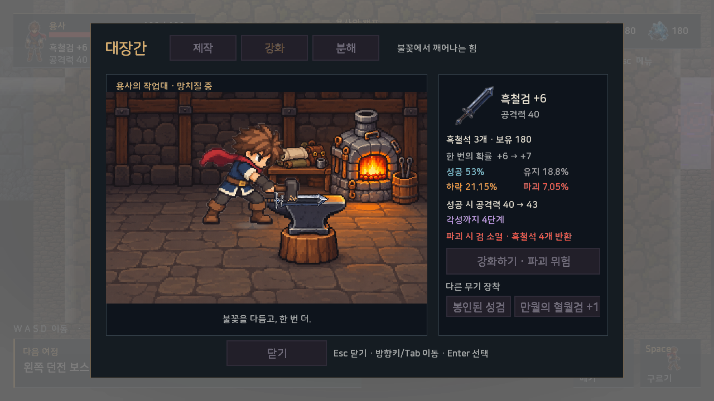
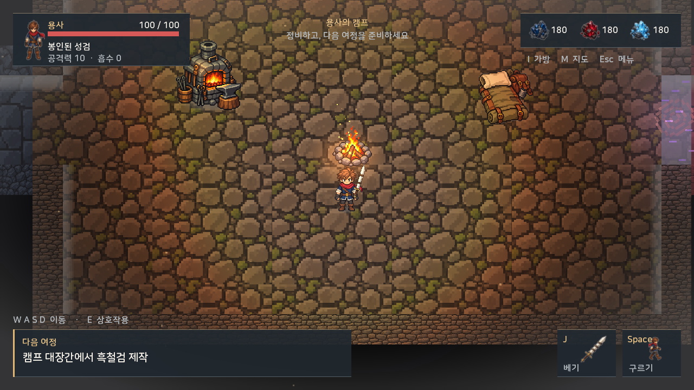

THE HERO DOES IT ALL · JAVA GAME
용사가 직접 벼리는 대장간
작업 장면은 크게, 확률과 재료는 간결하게.
선택한 2번 스타일을 실제 게임에 연결한 화면입니다.
2026.10.11 적용본
Java 17 · libGDX 실행 캡처
Java 17 · libGDX 실행 캡처

동작이 중심
세 번의 망치질 뒤 실제 결과에 맞는 동작을 보여줍니다. 성공은 기쁨, 유지는 멈칫, 하락은 낙담, 파괴는 반동으로 구분합니다.
필요한 정보는 가까이
확률 네 개와 비용은 오른쪽 작은 카드에 모았습니다. 하락·파괴 수치와 파괴 확인은 계속 명확하게 보입니다.
게임용 / 상세 그림
움직이는 용사와 무기는 2번 스타일. 가방·제작 카드·정보 미리보기에는 기존의 상세 그림을 씁니다.
게임 안에서도 같은 방향으로
용사·검·적·광맥·소품·바닥·벽에 적용했습니다.
